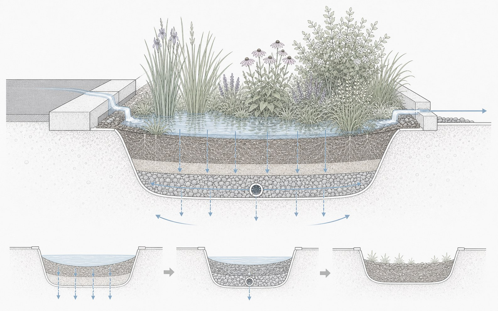
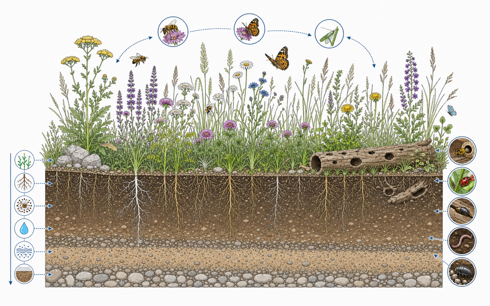
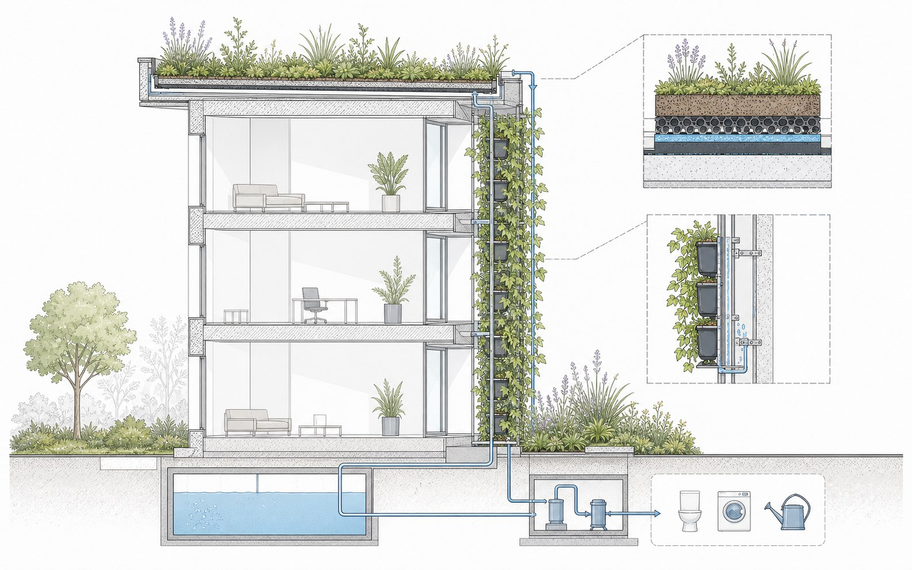

Rain garden section
A shallow planted basin receives runoff from adjacent paving, slows peak flow, and filters water through vegetation, engineered soil, gravel, and drainage layers.

Sponge city / Habitat / Technical systems
Technical studies for rainwater retention, insect-friendly planting, and building-integrated greening, translating ecological performance into buildable landscape sections.

This series studies blue-green infrastructure as a set of compact, repeatable landscape details: bioretention basins, habitat-rich planting strips, green roofs, and facade greening.
The focus is technical rather than atmospheric. Each drawing explains how water, soil, roots, substrate layers, drainage, and planting structure work together to improve stormwater retention, cooling, biodiversity, and everyday resilience.
A shallow planted basin receives runoff from adjacent paving, slows peak flow, and filters water through vegetation, engineered soil, gravel, and drainage layers.

A mixed meadow and perennial strip combines flowering layers, root diversity, stones, deadwood, and permeable soil to create small-scale habitat while improving soil moisture and biodiversity.
A roof-and-facade strategy combines substrate, retention layers, vertical planting modules, and water collection to cool the building envelope and extend habitat vertically.

The drawings treat blue-green infrastructure as practical spatial equipment: small details that can be repeated, adapted, and combined to improve water management, thermal comfort, and ecological value across urban open space.